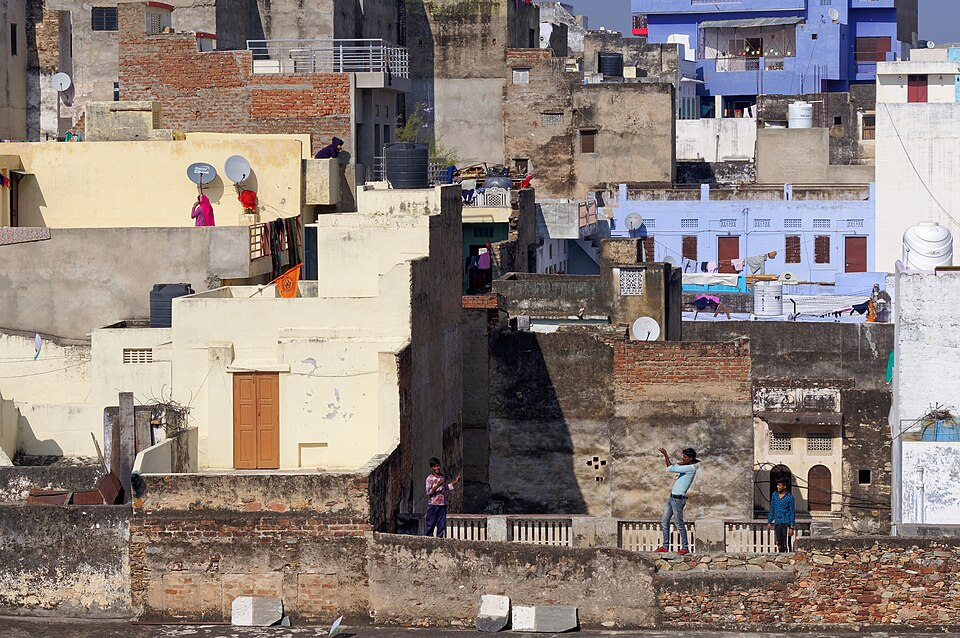

राष्ट्रीय
एनसीबी ने दिल्ली-कश्मीर ड्रग्स नेटवर्क का किया भंडाफोड़, पांच लाख गोलियां बरामद
नारकोटिक्स कंट्रोल ब्यूरो ने दिल्ली से कश्मीर तक फैला नशे का अंतरराज्यीय नेटवर्क पकड़ा है। संयुक्त अभियान में चार आरोपी गिरफ्तार हुए हैं और पांच लाख से अधिक नशीली गोलियां व कफ सिरप बरामद किए गए हैं।
राष्ट्रीयतेलंगाना: फिल्म पाइरेसी नेटवर्क का भंडाफोड़, दो छात्र गिरफ्तार
तेलंगाना साइबर सिक्योरिटी ब्यूरो ने फिल्म पाइरेसी रैकेट का खुलासा कर आंध्र प्रदेश के दो छात्रों को गिरफ्तार किया है। आरोपी सिनेमाघरों में मोबाइल से फिल्में रिकॉर्ड कर वेबसाइट पर अपलोड करते थे।
राष्ट्रीयपूर्व जजों के पैनल ने सीएम योगी से 1.27 करोड़ नाम कटने के सबूत मांगे
सुप्रीम कोर्ट और हाईकोर्ट के सेवानिवृत्त जजों के स्वतंत्र आयोग ने सीएम योगी आदित्यनाथ को पत्र लिखकर राज्य में 1.27 करोड़ हिंदुओं के नाम मतदाता सूची से हटाने संबंधी बयान के समर्थन में आंकड़े और दस्तावेज मांगे हैं।
राष्ट्रीयबरेली में साइबर ठगों ने डॉक्टर को बनाया डिजिटल अरेस्ट, लगाया डेढ़ करोड़ भेजने का आरोप
उत्तर प्रदेश के बरेली में साइबर ठगों ने एक मशहूर डॉक्टर को वीडियो कॉल के जरिए रात भर डिजिटल अरेस्ट रखा। ठगों ने खुद को एटीएस अधिकारी बताकर आतंकवादी संगठन को रकम भेजने का झूठा आरोप लगाया था।
राष्ट्रीयस्किल रखने वालों का काम AI नहीं छीन सकता: लखनऊ में बोले पीएम मोदी
प्रधानमंत्री नरेंद्र मोदी ने लखनऊ में कहा कि आर्टिफिशियल इंटेलिजेंस के दौर में भी स्किल रखने वालों की अहमियत कम नहीं होगी। उन्होंने भारत को वैश्विक स्किल कैपिटल बनाने पर जोर दिया।
 राष्ट्रीय
राष्ट्रीयस्किल रखने वालों का काम AI नहीं छीन सकता: लखनऊ में बोले पीएम मोदी
प्रधानमंत्री नरेंद्र मोदी ने लखनऊ में कहा कि आर्टिफिशियल इंटेलिजेंस के दौर में भी स्किल रखने वालों की आजीविका सुरक्षित है। उन्होंने भारत के 'स्किल कैपिटल' बनने की बात कही।
 राष्ट्रीय
राष्ट्रीयशेरशाह सूरी के ऐतिहासिक मकबरे की जर्जर हालत पर एनजीटी का स्वतः संज्ञान
राष्ट्रीय हरित अधिकरण ने बिहार के सासाराम स्थित शेरशाह सूरी के मकबरे की जर्जर होती संरचना और कृत्रिम झील में प्रदूषण पर स्वतः संज्ञान लिया है।
राष्ट्रीयलद्दाख में 370 हटने के बाद पहली बार हुए निकाय चुनाव, रिकॉर्ड मतदान दर्ज
जम्मू-कश्मीर से अलग होकर केंद्र शासित प्रदेश बनने के बाद लद्दाख में शनिवार को पहली बार नगर निकाय और पंचायत चुनाव हुए। कड़ाके की ठंड और भौगोलिक चुनौतियों के बावजूद मतदाताओं ने उत्साहपूर्वक मतदान किया।
राष्ट्रीयराष्ट्रपति द्रौपदी मुर्मू 28 नवंबर को एझिमाला नेवल अकादमी की लेंगी परेड
राष्ट्रपति द्रौपदी मुर्मू 28 नवंबर को केरल के एझिमाला स्थित इंडियन नेवल अकादमी में पासिंग आउट परेड की समीक्षा करेंगी। इस समारोह में 400 से अधिक कैडेट्स भारतीय नौसेना में अधिकारी बनेंगे।
राष्ट्रीयआजम खान के बिरयानी वाले बयान से छिड़ी बहस, यूपी और हैदराबाद के स्वाद पर चर्चा
समाजवादी पार्टी नेता आजम खान के बयान के बाद यूपी और हैदराबाद की बिरयानी को लेकर बहस शुरू हो गई है। आजतक की टीम ने रामपुर के खानसामों और हैदराबाद के लोगों से इस पर बात की है।
राष्ट्रीयआजम खान के बिरयानी वाले बयान से यूपी की सियासत में छिड़ी बहस
समाजवादी पार्टी नेता आजम खान के बयान के बाद उत्तर प्रदेश की राजनीति में हैदराबादी बिरयानी और यूपी के खानपान को लेकर चर्चा शुरू हो गई है।
राष्ट्रीयपश्चिम बंगाल: कर्ज का झांसा देकर 15 महिलाओं के खातों से ₹40 लाख की साइबर ठगी
पश्चिम बंगाल के नदिया जिले में कर्ज दिलाने का लालच देकर 15 महिलाओं के बैंक खाते खुलवाए गए और उनके जरिए ₹40 लाख की साइबर ठगी को अंजाम दिया गया। दूसरे राज्य की पुलिस ने मामले में कार्रवाई की है।
राष्ट्रीययूपी एनकाउंटर में 35% अल्पसंख्यक आरोपी, ओवैसी ने सहारनपुर में किया दावा
AIMIM प्रमुख असदुद्दीन ओवैसी ने सहारनपुर में दावा किया कि उत्तर प्रदेश के एनकाउंटर में 35 फीसदी और 'हाफ एनकाउंटर' में 90 फीसदी अल्पसंख्यक आरोपी होते हैं। उन्होंने सरकार बनने पर जांच आयोग गठित करने का वादा किया।
 राष्ट्रीय
राष्ट्रीयउत्तर प्रदेश के सभी मतदान केंद्रों पर 22 नवंबर को विशेष मतदाता अभियान
उत्तर प्रदेश में मतदाता सूची में नाम जांचने और संशोधन के लिए 22 नवंबर को सभी बूथों पर विशेष अभियान चलाया जाएगा। मुख्य निर्वाचन अधिकारी कार्यालय ने इसकी तैयारी पूरी कर ली है।
राष्ट्रीयभोपाल में करोड़ों की ठगी और फर्जी लोन मामले में फरार दंपती गिरफ्तार
भोपाल में फर्जी दस्तावेजों के जरिए बैंकों से करोड़ों रुपये का लोन लेने के आरोपी पति-पत्नी को पुलिस ने गिरफ्तार किया है। दोनों एक साल से फरार थे और उनके खिलाफ वारंट जारी थे।
राष्ट्रीयपीएम मोदी ने की सराहना, कहा- देशवासियों ने कम सोना खरीदने की अपील पर दिया सकारात्मक साथ
प्रधानमंत्री नरेंद्र मोदी ने शनिवार को कहा कि देशवासियों ने कम सोना खरीदने की उनकी अपील पर सकारात्मक प्रतिक्रिया दी है। उन्होंने 1965 में लाल बहादुर शास्त्री की अपील का हवाला देते हुए देश के सहयेग की भावना को सराहा।
राष्ट्रीयपंजाब: एएसआई इकबाल सिंह हत्याकांड में दूसरा शूटर अमृतसर से गिरफ्तार
पंजाब पुलिस ने तरनतारन जिले में हुई एएसआई इकबाल सिंह की हत्या के मामले में दूसरे मुख्य शूटर को अमृतसर से गिरफ्तार कर लिया है। पुलिस इस मामले में अन्य सहयोगियों की तलाश कर रही है।
राष्ट्रीयसंगीतकार अनिरुद्ध और काव्या मारन के रिसेप्शन में शामिल हुए कई दिग्गज
संगीतकार अनिरुद्ध रविचंदर और काव्या मारन के विवाह समारोह के रिसेप्शन में रजनीकांत, कमल हासन और मुख्यमंत्री विजय सहित कई जानी-मानी हस्तियां शामिल हुईं।
 राष्ट्रीय
राष्ट्रीयतमिलनाडु में आयुष मेडिकल पाठ्यक्रमों के लिए दाखिले का आखिरी दौर 22 नवंबर से
तमिलनाडु में आयुष मेडिकल पाठ्यक्रमों में खाली सीटों को भरने के लिए दाखिले का अंतिम दौर 22 नवंबर से शुरू होगा। यह निर्णय ऑनलाइन काउंसलिंग के पिछले चरणों के बाद लिया गया है।
राष्ट्रीयसर्दियों में लंच के लिए बनाएं सेहतमंद और स्वादिष्ट आंवला रायता
विटामिन-सी और फाइबर से भरपूर आंवले का चटपटा रायता सर्दियों में दोपहर के खाने का स्वाद बढ़ाने के साथ सेहत के लिए भी बहुत फायदेमंद है।
राष्ट्रीयभारतीय क्रिकेटर युजवेंद्र चहल भाजपा में शामिल, ओबीसी मोर्चा में मिली अहम जिम्मेदारी
भारतीय लेग स्पिनर युजवेंद्र चहल भारतीय जनता पार्टी में शामिल हो गए हैं। पार्टी ने उन्हें ओबीसी मोर्चा की राष्ट्रीय कार्यसमिति में विशेष आमंत्रित सदस्य के रूप में नियुक्त किया है।
राष्ट्रीयदेव दीपावली 2026: जानिए सही तिथि, दीपदान का शुभ मुहूर्त और इसका धार्मिक महत्व
कार्तिक मास की पूर्णिमा तिथि को मनाई जाने वाली देव दीपावली का हिंदू धर्म में विशेष महत्व है। धार्मिक मान्यताओं के अनुसार, इस दिन देवतागण स्वर्ग से पृथ्वी पर आकर गंगा तट पर दीप जलाते हैं।
राष्ट्रीयकाव्या मारन और अनिरुद्ध के चेन्नई रिसेप्शन में पहुंचे कई वीवीआईपी, पीएम मोदी ने दी बधाई
संगीतकार अनिरुद्ध रविचंदर और बिजनेसवुमन काव्या मारन के चेन्नई रिसेप्शन में रजनीकांत और कमल हासन समेत कई दिग्गज शामिल हुए। प्रधानमंत्री नरेंद्र मोदी ने पत्र भेजकर जोड़े को बधाई दी।
राष्ट्रीयभारतीय क्रिकेटर युजवेंद्र चहल भाजपा में शामिल, ओबीसी मोर्चा में मिली जिम्मेदारी
भारतीय क्रिकेटर युजवेंद्र चहल शनिवार को भारतीय जनता पार्टी में शामिल हो गए। पार्टी ने उन्हें राष्ट्रीय ओबीसी मोर्चा की कार्यकारिणी में विशेष आमंत्रित सदस्य बनाया है।
राष्ट्रीयक्रिकेटर युजवेंद्र चहल भारतीय जनता पार्टी में हुए शामिल
भारतीय क्रिकेटर युजवेंद्र चहल शनिवार को आधिकारिक तौर पर भाजपा में शामिल हो गए। पार्टी ने उन्हें राष्ट्रीय ओबीसी मोर्चा की नई कार्यकारिणी में 'स्पेशल इनवाइटी' बनाया है।
राष्ट्रीयपठानकोट कार लूट मामला: पंजाब पुलिस ने चारों आरोपियों को किया गिरफ्तार
पंजाब के पठानकोट में हाईवे के पास बंदूक की नोक पर XUV500 लूटने वाले चारों आरोपियों को पुलिस ने गिरफ्तार कर लिया है। मास्टरमाइंड को गुजरात से पकड़ा गया है और लूटी गई गाड़ी भी बरामद कर ली गई है।
 राष्ट्रीय
राष्ट्रीयपरिसीमन नोटबंदी से भी बड़ी आपदा साबित होगा, शशि थरूर ने दी चेतावनी
कांग्रेस नेता शशि थरूर ने परिसीमन को लेकर केंद्र सरकार पर निशाना साधा है। उन्होंने कहा कि यह नोटबंदी से भी बड़ी आपदा साबित होगी और इसके असर लंबे समय तक रहेंगे।
 राष्ट्रीय
राष्ट्रीयसुप्रीम कोर्ट का दिल्ली-एनसीआर में पटाखों पर बदलता रहा है रुख
सुप्रीम कोर्ट ने दिल्ली-एनसीआर में दिवाली पर पूरी पाबंदी के बजाय ग्रीन क्रैकर्स की अनुमति दी, लेकिन पिछले एक दशक में अदालत के रुख में कई बार बदलाव देखे गए हैं।
राष्ट्रीयचेन्नई में हुआ अनिरुद्ध रविचंदर और काव्या मारन का वेडिंग रिसेप्शन, उपराष्ट्रपति हुए शामिल
म्यूजिक कंपोजर अनिरुद्ध रविचंदर और सनराइजर्स हैदराबाद की सह-मालिक काव्या मारन का चेन्नई में वेडिंग रिसेप्शन आयोजित हुआ। इस समारोह में उपराष्ट्रपति सी.पी. राधाकृष्णन, रजनीकांत और एम.के. स्टालिन समेत कई हस्तियां शामिल हुईं।
राष्ट्रीयउत्तर प्रदेश में सुधरा महिला सुरक्षा का माहौल, रात में भी लौट रहीं बेटियां: PM मोदी
प्रधानमंत्री नरेंद्र मोदी ने उत्तर प्रदेश में महिला सुरक्षा की स्थिति पर संतोष जताया है। उन्होंने कहा कि राज्य में अब बेटियां रात 11 बजे भी काम से सुरक्षित घर लौट रही हैं।
राष्ट्रीयउच्च पदों पर महिलाओं की मौजूदगी से लैंगिक समानता नहीं: जस्टिस नागरत्ना
सुप्रीम कोर्ट की जज जस्टिस बीवी नागरत्ना ने ऑक्सफोर्ड विश्वविद्यालय में एक व्याख्यान के दौरान कहा कि उच्च पदों पर कुछ महिलाओं की मौजूदगी से समाज में वास्तविक लैंगिक समानता साबित नहीं होती।
राष्ट्रीयसहारनपुर में सर्किट हाउस के दौरान एआईएमआईएम प्रमुख असदुद्दीन ओवैसी को मिला गार्ड ऑफ ऑनर
उत्तर प्रदेश के सहारनपुर में प्रोटोकॉल की चूक के कारण एआईएमआईएम प्रमुख असदुद्दीन ओवैसी को सुप्रीम कोर्ट के जज के लिए आरक्षित गार्ड ऑफ ऑनर दे दिया गया।
राष्ट्रीयउत्तर प्रदेश में बन रही है ब्रह्मोस मिसाइल, पीएम मोदी ने गिनाईं उपलब्धियां
प्रधानमंत्री नरेंद्र मोदी ने उत्तर प्रदेश में रक्षा और सेमीकंडक्टर विनिर्माण के बढ़ते दायरे की सराहना की। उन्होंने कहा कि ऑपरेशन सिंदूर में दुश्मन की नींद उड़ाने वाली ब्रह्मोस मिसाइल अब यूपी में ही तैयार हो रही है।
राष्ट्रीयपत्रकारिता से कॉकपिट तक: पायलट हना मोहसिन खान ने साझा किया सफर
आजतक मास्टरक्लास में कमर्शियल पायलट हना मोहसिन खान ने पत्रकारिता से एविएशन क्षेत्र तक पहुंचने का अपना सफर साझा किया और कॉकपिट की चुनौतियों पर बात की।
राष्ट्रीयमेरठ में दुकानदारों को सम्मोहित कर लूटने वाले ईरानी गैंग के पांच बदमाश गिरफ्तार
उत्तर प्रदेश के मेरठ पुलिस ने दुकानदारों को सम्मोहित कर लूटपाट करने वाले ईरानी गैंग के पांच बदमाशों को गिरफ्तार किया है। इनमें से चार आरोपियों पर 25-25 हजार रुपये का इनाम घोषित था।
राष्ट्रीयविश्व हिंदू परिषद ने फिल्म 'रामायण' के प्रदर्शन पर रोक लगाने की मांग की
विश्व हिंदू परिषद ने रणबीर कपूर की आने वाली फिल्म 'रामायण' पर आपत्ति जताई है। संगठन ने रावण के चित्रण और पारंपरिक कथा में बदलाव का आरोप लगाते हुए सेंसर सर्टिफिकेट रद्द करने की मांग की है।
राष्ट्रीयअमित शाह का सियांग प्रोजेक्ट पर आश्वासन, स्थानीय संस्कृति से समझौता नहीं होगा
केंद्रीय गृह मंत्री अमित शाह ने अरुणाचल प्रदेश में सियांग अपर मल्टीपर्पज प्रोजेक्ट को लेकर स्थानीय लोगों की चिंताओं पर चर्चा का भरोसा दिया है। उन्होंने कहा कि संस्कृति और धार्मिक मान्यताओं से समझौता किए बिना आगे बढ़ेंगे।
राष्ट्रीयपश्चिम एशिया संघर्ष के दौरान देश में गैस आपूर्ति नहीं होने दी बाधित: पीएम मोदी
प्रधानमंत्री नरेंद्र मोदी ने कहा कि पश्चिम एशिया संघर्ष और स्ट्रेट ऑफ हॉर्मुज से जुड़ी बाधाओं के बावजूद भारत में घरेलू गैस की आपूर्ति बिना किसी रुकावट के जारी रही।

राष्ट्रीयपुष्कर मेला 2026: साफा बांधने की प्रतियोगिता में स्पेन के जोड़े ने मारी बाजी
राजस्थान के प्रसिद्ध पुष्कर मेले में इस बार साफा बांधने और मूंछों की प्रतियोगिता मुख्य आकर्षण रही। स्पेन से आए एक विदेशी जोड़े ने साफा बांध प्रतियोगिता में पहला स्थान हासिल किया।
राष्ट्रीयशाहज़ाद पूनावाला ने बीजेपी छोड़ी, वित्तीय कारणों और मीडिया में वापसी का किया ज़िक्र
भारतीय जनता पार्टी के पूर्व राष्ट्रीय प्रवक्ता शाहज़ाद पूनावाला ने वित्तीय कारणों और दीर्घकालिक योजनाओं का हवाला देते हुए पार्टी छोड़ने का फैसला किया है। वे अब मीडिया और डिजिटल सेक्टर में वापसी कर रहे हैं।
राष्ट्रीयमेरठ नीला ड्रम हत्याकांड: फांसी की सजा काट रही मुस्कान को सता रही बेटी की याद
मेरठ के चर्चित नीला ड्रम हत्याकांड में फांसी की सजा पाने वाली मुस्कान जेल में अपनी बड़ी बेटी से मिलने की इच्छा जता रही है। वहीं, वकीलों के पैनल ने जेल पहुंचकर दोनों दोषियों से मुलाकात की है।
राष्ट्रीयक्रिकेट में चयन प्रदर्शन के आधार पर होना चाहिए: इमरान मसूद
मोहम्मद सिराज को बाहर किए जाने को लेकर दिए गए बयान पर विवाद के बाद कांग्रेस सांसद इमरान मसूद ने सफाई दी है। उन्होंने कहा कि टीम चयन केवल प्रदर्शन के आधार पर होना चाहिए।
राष्ट्रीयसंगीतकार अनिरुद्ध रविचंदर और काव्या मारन आज चेन्नई में देंगे रिसेप्शन
म्यूजिक कंपोजर अनिरुद्ध रविचंदर और बिजनेसवुमन काव्या मारन 21 नवंबर को चेन्नई में अपने विवाह का रिसेप्शन दे रहे हैं। दोनों ने 11 नवंबर को ग्रीस में शादी की थी।
राष्ट्रीयगिरिडीह में सफाईकर्मी की मौत के बाद शव वाहन न मिलने पर कचरा गाड़ी से ले जाया गया शव
झारखंड के गिरिडीह में एक सफाईकर्मी की मौत के बाद कथित तौर पर शव वाहन उपलब्ध नहीं हुआ, जिसके बाद शव को कचरा ढोने वाले वाहन से घर ले जाया गया। स्थानीय प्रशासन और व्यवस्था पर सवाल उठे हैं।
 राष्ट्रीय
राष्ट्रीयअहमदाबाद कॉन्सर्ट से पहले दिलजीत के चार गानों पर रोक की मांग
अहमदाबाद में होने वाले दिलजीत दोसांझ के कॉन्सर्ट से पहले एक प्रोफेसर ने शराब और हिंसा को बढ़ावा देने वाले चार गाने न गाने की मांग की है। वहीं, सुरक्षा के लिए दो हजार जवान तैनात किए गए हैं।
राष्ट्रीयNEET-UG 2026 पेपर लीक मामला: सभी 14 आरोपियों ने कोर्ट में खुद को बेकसूर बताया, 25 नवंबर से ट्रायल शुरू
NEET-UG 2026 पेपर लीक मामले में राऊज एवेन्यू कोर्ट ने सभी 14 आरोपियों पर आरोप तय कर दिए हैं। आरोपियों ने खुद को बेकसूर बताया है, जिसके बाद अदालत ने 25 नवंबर से रोजाना ट्रायल शुरू करने का निर्देश दिया है।
राष्ट्रीयकौन बनेगा करोड़पति 18: जलगांव के भूषण ठाकरे बने सीजन के पहले करोड़पति
लोकप्रिय क्विज शो 'कौन बनेगा करोड़पति 18' में जलगांव के भूषण ठाकरे इस सीजन के पहले एक करोड़ रुपए जीतने वाले प्रतियोगी बन गए हैं। वे अब सात करोड़ रुपए के सवाल का सामना करेंगे।
राष्ट्रीयजननायक एक्सप्रेस में सीट को लेकर विवाद, जीआरपी और यात्रियों में मारपीट
अमृतसर जा रही जननायक एक्सप्रेस में सीट को लेकर हुए विवाद में जीआरपी और यात्रियों के बीच मारपीट हो गई। पुलिस ने सरकारी काम में बाधा डालने का मामला दर्ज किया है।
 राष्ट्रीय
राष्ट्रीयराजस्थान पंचायत चुनाव में कांग्रेस का शानदार प्रदर्शन, बीजेपी को झटका
राजस्थान पंचायत चुनावों में कांग्रेस पार्टी ने मजबूत प्रदर्शन करते हुए जिला परिषद और पंचायत समिति चुनावों में बड़ी जीत हासिल की है, जिससे बीजेपी को बड़ा झटका लगा है।
राष्ट्रीयतमिलनाडु के नागरकोइल में महिला से दुष्कर्म और हत्या, छह घंटे में आरोपी गिरफ्तार
तमिलनाडु के नागरकोइल रेलवे यार्ड में एक खाली कोच से 54 वर्षीय महिला का शव बरामद हुआ। पुलिस ने त्वरित कार्रवाई करते हुए छह घंटे के भीतर आरोपी को गिरफ्तार कर लिया।
राष्ट्रीयतमिलनाडु के नागरकोइल में महिला से दुष्कर्म और हत्या, छह घंटे में आरोपी गिरफ्तार
तमिलनाडु के नागरकोइल रेलवे यार्ड में एक खाली कोच से 54 वर्षीय महिला का शव बरामद हुआ। पुलिस ने त्वरित कार्रवाई करते हुए छह घंटे के भीतर आरोपी को गिरफ्तार कर लिया है।
राष्ट्रीयसियांग घाटी मेगा बांध परियोजना: अमित शाह ने अरुणाचल के लोगों को दिया बातचीत का भरोसा
केंद्रीय गृह मंत्री अमित शाह ने अरुणाचल प्रदेश की सियांग घाटी में प्रस्तावित मेगा बांध परियोजना को लेकर स्थानीय लोगों की चिंताओं को बातचीत के जरिए दूर करने का आश्वासन दिया है।
 राष्ट्रीय
राष्ट्रीयअडाणी डिफेंस ने पोकरण में किया बघीरा AT1 मिसाइल का सफल प्रदर्शन
अडाणी डिफेंस एंड एयरोस्पेस ने राजस्थान के पोकरण में अपनी नई व्हीकल-माउंटेड एंटी-टैंक गाइडेड मिसाइल 'बघीरा AT1' का सफल प्रदर्शन किया है। इस दौरान 8 किलोमीटर दूर तक टारगेट को भेदा गया।
राष्ट्रीयNEET-UG पेपर लीक मामला: दिल्ली कोर्ट ने तीन NTA एक्सपर्ट समेत 14 आरोपियों पर तय किए आरोप
दिल्ली की एक विशेष अदालत ने NEET-UG 2026 पेपर लीक मामले में तीन NTA एक्सपर्ट्स समेत सभी 14 आरोपियों के खिलाफ औपचारिक रूप से आरोप तय कर दिए हैं। मामले की रोजाना सुनवाई 25 नवंबर से शुरू होगी।
राष्ट्रीयराजस्थान की राजनीति में आरएलपी का प्रवेश और हनुमान बेनीवाल का सफर
क्षेत्रीय दलों के लिए कठिन माने जाने वाले राजस्थान में राष्ट्रीय लोकतांत्रिक पार्टी ने अपनी जगह बनाई है। पार्टी प्रमुख हनुमान बेनीवाल के सामने अब इस राजनीतिक आधार को आगामी विधानसभा चुनावों में भुनाने की चुनौती है।
 राष्ट्रीय
राष्ट्रीयबिहार में घोटालों की जगह अब निवेश की चर्चा: वैशाली में पीएम मोदी
प्रधानमंत्री नरेंद्र मोदी ने बिहार में पिछले शासनकाल पर निशाना साधते हुए कहा कि राज्य अब घोटालों और अपराध के दौर से निकलकर निवेश और विकास की राह पर आगे बढ़ चुका है।
राष्ट्रीयश्रावणी राणे और मोहम्मद फ़ैज़ मामला: बॉम्बे हाईकोर्ट और ज़मानत से जुड़े विवाद की पूरी ख़बर
अक्तूबर 2026 में विशेष विवाह अधिनियम के तहत शादी करने वाले श्रावणी राणे और मोहम्मद फ़ैज़ के मामले में अदालत ने पति को अग्रिम ज़मानत दे दी है। पत्नी ने जबरन धर्मांतरण के आरोपों को खारिज किया है।
राष्ट्रीयहर कोई IAS नहीं बन सकता, स्किल डेवलपमेंट और व्यावहारिक ज्ञान जरूरी: अवध ओझा
आजतक मास्टरक्लास 2026 में यूपीएससी कोच अवध ओझा ने कहा कि युवाओं को सिर्फ डिग्री के पीछे भागने के बजाय व्यावहारिक कौशल और समस्याओं को सुलझाने की क्षमता पर ध्यान देना चाहिए।
राष्ट्रीयसलमान खान ने 'दबंग 4' में चुलबुल पांडे के रूप में वापसी की पुष्टि की
अभिनेता सलमान खान ने अपनी लोकप्रिय फिल्म फ्रेंचाइजी 'दबंग' के चौथे हिस्से की पुष्टि कर दी है। उन्होंने इसके साथ ही 'बजरंगी भाईजान 2' को लेकर भी अपनी बात रखी है।
राष्ट्रीयफिल्म 'पद्मावत' की शूटिंग के दौरान रणवीर सिंह को पड़े थे 24 थप्पड़
दिग्गज अभिनेता रजा मुराद ने एक इंटरव्यू में खुलासा किया है कि फिल्म 'पद्मावत' के एक सीन को परफेक्ट बनाने के लिए रणवीर सिंह को 24 बार थप्पड़ खाने पड़े थे, जिससे उनका गाल सूज गया था।
राष्ट्रीयगोरखपुर में तेज रफ्तार ट्रक की टक्कर से हाथी की मौत, महावत घायल
उत्तर प्रदेश के गोरखपुर में एनएच-24 पर तेज रफ्तार ट्रक की टक्कर से सड़क किनारे चल रहे एक हाथी की मौके पर ही मौत हो गई, जबकि महावत और एक अन्य युवक गंभीर रूप से घायल हो गए।
 राष्ट्रीय
राष्ट्रीयप्रधानमंत्री नरेंद्र मोदी ने बिहार में नीतीश सेतु का किया उद्घाटन
प्रधानमंत्री नरेंद्र मोदी ने बिहार के वैशाली और पटना के बीच गंगा नदी पर बने नीतीश सेतु का उद्घाटन किया है। इससे दोनों जिलों के बीच आवागमन सुगम होगा और करोड़ों रुपये की परियोजनाओं की सौगात मिलेगी।
राष्ट्रीयप्रधानमंत्री नरेंद्र मोदी ने बिहार के वैशाली में ₹4,280 करोड़ की लागत वाले 'नीतीश सेतु' का किया उद्घाटन
प्रधानमंत्री नरेंद्र मोदी ने शनिवार को बिहार के वैशाली और पटना को जोड़ने वाले छह लेन के 'नीतीश सेतु' का उद्घाटन किया। ₹4,280 करोड़ की लागत वाले इस पुल के नामकरण को लेकर सत्ता पक्ष और आरजेडी के बीच राजनीतिक बयानबाजी शुरू हो गई है।
राष्ट्रीयबिहार में कच्ची दरगाह-बिदुपुर ब्रिज के नामकरण और उद्घाटन पर सियासी घमासान
प्रधानमंत्री नरेंद्र मोदी द्वारा उद्घाटन किए जाने वाले कच्ची दरगाह-बिदुपुर 6 लेन ब्रिज का नाम 'नीतीश सेतु' रखे जाने पर बिहार में राजनीतिक विवाद शुरू हो गया है। विपक्ष ने नाम बदलने और दोबारा उद्घाटन का आरोप लगाया है।
राष्ट्रीयसलमान खान ने की 'दबंग 4' की पुष्टि, जल्द शुरू होगी नई फिल्म
बॉलीवुड अभिनेता सलमान खान ने अपनी लोकप्रिय फ्रेंचाइजी 'दबंग' के चौथे हिस्से की पुष्टि कर दी है। अभिनेता इन दिनों अपनी आगामी फिल्म 'मातृभूमि' के प्रमोशन में व्यस्त हैं।
राष्ट्रीयबिजनौर में जननायक एक्सप्रेस में सीट को लेकर विवाद, जीआरपी सिपाहियों पर महिला से मारपीट का आरोप
उत्तर प्रदेश के बिजनौर में नजीबाबाद के पास जननायक एक्सप्रेस में सीट को लेकर हुए विवाद में जीआरपी के दो सिपाहियों पर एक महिला के साथ मारपीट करने का आरोप लगा है। घटना का वीडियो सोशल मीडिया पर वायरल हो रहा है।
 राष्ट्रीय
राष्ट्रीयवाराणसी के नमो घाट पर 'भजन क्लबिंग' का आयोजन, पीएम मोदी ने की युवाओं के उत्साह की सराहना
वाराणसी के नमो घाट पर चार दिवसीय गंगा महोत्सव के दौरान 'भजन क्लबिंग' का आयोजन किया गया। आधुनिक बीट्स पर पारंपरिक भजनों के इस कार्यक्रम में युवाओं ने भारी उत्साह दिखाया, जिसकी प्रधानमंत्री नरेंद्र मोदी ने सराहना की है।
राष्ट्रीयबीजेपी सांसद निशिकांत दुबे ने सोनिया गांधी और मारुति से जुड़े मामलों पर उठाए सवाल
बीजेपी सांसद निशिकांत दुबे ने सोनिया गांधी की मारुति से जुड़ी कंपनियों में हिस्सेदारी और पुरानी कांग्रेस सरकारों के दौरान फैसलों को लेकर कई गंभीर सवाल उठाए हैं।
राष्ट्रीयसहारनपुर में पुलिस ने एआईएमआईएम प्रमुख असदुद्दीन ओवैसी को गलती से दिया गार्ड-ऑफ-ऑनर
सहारनपुर सर्किट हाउस में पुलिस ने सुप्रीम कोर्ट के जज के बजाय गफलत में एआईएमआईएम प्रमुख असदुद्दीन ओवैसी को गार्ड-ऑफ-ऑनर दे दिया। मामले की जांच एसपी देहात को सौंपी गई है।
राष्ट्रीयहैदराबाद में मेटा दफ्तर पर यूथ कांग्रेस का प्रदर्शन, 21 कार्यकर्ता हिरासत में
भारतीय युवा कांग्रेस के नेताओं के इंस्टाग्राम अकाउंट रोके जाने के विरोध में हैदराबाद, मुंबई और गुरुग्राम स्थित मेटा कार्यालयों पर प्रदर्शन किया गया। हैदराबाद में तोड़फोड़ के बाद प्रदेश अध्यक्ष समेत 21 कार्यकर्ता हिरासत में लिए गए।
 राष्ट्रीय
राष्ट्रीयकश्मीर घाटी में कोई स्थानीय आतंकी नहीं बचा, अमित शाह का बयान
केंद्रीय गृह मंत्री अमित शाह ने कहा कि कश्मीर घाटी में अब कोई स्थानीय आतंकवादी सक्रिय नहीं है। पुलवामा और कुलगाम में हालिया मुठभेड़ों में लश्कर-ए-तैयबा के स्थानीय आतंकियों के मारे जाने के बाद अब केवल पाकिस्तानी आतंकी बचे हैं।
राष्ट्रीयकश्मीर घाटी में कोई स्थानीय आतंकी सक्रिय नहीं, सभी पाकिस्तानी: अमित शाह
केंद्रीय गृह मंत्री अमित शाह ने कहा है कि अनुच्छेद 370 हटने के बाद कश्मीर घाटी में कश्मीरी युवाओं में अलगाववाद खत्म हो गया है और अब वहां कोई स्थानीय आतंकवादी सक्रिय नहीं बचा है।
 राष्ट्रीय
राष्ट्रीयकश्मीर में अब कोई स्थानीय आतंकवादी सक्रिय नहीं: अमित शाह
केंद्रीय गृह मंत्री अमित शाह ने अरुणाचल प्रदेश में कहा कि अनुच्छेद 370 हटने के बाद कश्मीर में अलगाववाद खत्म हुआ है और घाटी में अब केवल विदेशी आतंकवादी ही बचे हैं।
राष्ट्रीयमणिपुर के चंदेल जिले में जहरीली शराब पीने से 14 लोगों की मौत
मणिपुर के चंदेल जिले में जहरीली शराब पीने से 14 लोगों की जान चली गई है, जबकि 300 से अधिक लोगों को विभिन्न अस्पतालों में भर्ती कराया गया है। प्रशासन ने मेथनॉल विषाक्तता की आशंका जताई है।
राष्ट्रीयकानून के पेशे में सफलता का कोई शॉर्टकट नहीं, मेहनत ही सबसे बड़ा मंत्र: अभिषेक मनु सिंघवी
कांग्रेस के वरिष्ठ नेता और वरिष्ठ वकील अभिषेक मनु सिंघवी ने कहा है कि वकालत में सफलता का कोई निश्चित फॉर्मूला नहीं है, लेकिन इसमें 99 प्रतिशत योगदान लगातार मेहनत का होता है।
 राष्ट्रीय
राष्ट्रीयपीएम मोदी का पश्चिम बंगाल, बिहार और उत्तर प्रदेश का दौरा आज
प्रधानमंत्री नरेंद्र मोदी आज पश्चिम बंगाल, बिहार और उत्तर प्रदेश के दौरे पर हैं। वे आईआईटी खड़गपुर के समारोह में शामिल होने के अलावा विभिन्न विकास परियोजनाओं की सौगात देंगे।
राष्ट्रीयबिहार: बाहुबली विधायक अनंत सिंह ने अपनी बेटी की शादी में दामाद को दिए जेवर और बर्तन
बिहार के मोकामा से विधायक अनंत सिंह ने अपनी बेटी की शादी में दामाद को लग्जरी गाड़ी डिफेंडर, 18 तोला सोने के आभूषण और सोने-चांदी के बर्तन उपहार में दिए हैं।
राष्ट्रीयआईआईटी खड़गपुर के प्लेटिनम जुबली समारोह में शामिल हुए पीएम मोदी
प्रधानमंत्री नरेंद्र मोदी ने देश के पहले भारतीय प्रौद्योगिकी संस्थान, आईआईटी खड़गपुर के प्लेटिनम जुबली समारोह में हिस्सा लिया और '75 वॉइसेज फॉर विकसित भारत' पहल के तहत छात्रों से संवाद किया।
 राष्ट्रीय
राष्ट्रीयदक्षिण दिल्ली में शादियों के कारण ट्रैफिक जाम की आशंका, पुलिस ने जारी की एडवाइजरी
दक्षिण दिल्ली में शनिवार को 27 से अधिक शादियों के कारण भारी ट्रैफिक जाम की आशंका है। दिल्ली ट्रैफिक पुलिस ने एडवाइजरी जारी कर लोगों को मेट्रो का उपयोग करने और प्रभावित रास्तों से बचने की सलाह दी है।
राष्ट्रीयमेटा के ऑफिसों में यूथ कांग्रेस का प्रदर्शन, चार के खिलाफ एफआईआर
इंस्टाग्राम अकाउंट सस्पेंड होने के विरोध में यूथ कांग्रेस ने हैदराबाद, मुंबई और गुरुग्राम में मेटा के ऑफिसों के बाहर प्रदर्शन किया। मुंबई पुलिस ने यूथ कांग्रेस अध्यक्ष समेत चार लोगों के खिलाफ मामला दर्ज किया है।
राष्ट्रीयइंदौर में डबल मर्डर: घर में बेटी और बोरे में मिला पिता का शव
मध्य प्रदेश के इंदौर में दो अलग-अलग स्थानों पर पिता-पुत्री के शव मिलने से सनसनी फैल गई है। पुलिस ने संपत्ति विवाद के चलते मृतक के बेटे पर हत्या की आशंका जताई है।
राष्ट्रीयरामा और श्यामा तुलसी में क्या है अंतर, घर में कौन सी लगाना माना जाता है शुभ
हिंदू धर्म में रामा और श्यामा तुलसी दोनों को पवित्र माना गया है। जानिए दोनों में क्या अंतर है और घर में कौन सी तुलसी लगाना ज्यादा शुभ होता है।
राष्ट्रीयकिरेन रिजिजू का राहुल गांधी पर पलटवार, 1962 के युद्ध और आर्थिक नीतियों पर पूछे सवाल
केंद्रीय मंत्री किरेन रिजिजू ने राहुल गांधी के ‘कम्प्रोमाइज्ड PM’ वाले बयान पर नाराजगी जताई है। उन्होंने 1962 के भारत-चीन युद्ध और पिछली आर्थिक नीतियों को लेकर कांग्रेस से जवाब मांगा है।
राष्ट्रीयमुख्यमंत्री योगी आदित्यनाथ ने मां सावित्री देवी को दी अंतिम विदाई
उत्तर प्रदेश के मुख्यमंत्री योगी आदित्यनाथ अपनी मां सावित्री देवी के निधन पर अंतिम यात्रा के दौरान भावुक नजर आए। उन्होंने पार्थिव शरीर को कंधा दिया और हरिद्वार में अंतिम संस्कार किया जाएगा।
राष्ट्रीयबाराबंकी में पूर्वांचल एक्सप्रेसवे पर भीषण सड़क हादसा, पिकअप और एंबुलेंस की टक्कर में पांच की मौत
उत्तर प्रदेश के बाराबंकी जिले में पूर्वांचल एक्सप्रेसवे पर एक पिकअप और एंबुलेंस के बीच हुई टक्कर में पांच लोगों की मौत हो गई। सूचना मिलने पर पुलिस और राहत दल मौके पर पहुंचे।
 राष्ट्रीय
राष्ट्रीयभारत में एचपीवी टीकाकरण अभियान ने पार किया एक करोड़ का आंकड़ा
भारत में राष्ट्रीय एचपीवी टीकाकरण अभियान के तहत नौ महीने से कम समय में एक करोड़ से अधिक खुराक दी जा चुकी हैं। उत्तर प्रदेश इस अभियान में सबसे आगे है।
 राष्ट्रीय
राष्ट्रीयसीबीएसई कक्षा 10 गणित की परीक्षा 17 फरवरी को होगी आयोजित
केंद्रीय माध्यमिक शिक्षा बोर्ड (CBSE) ने 10वीं कक्षा की गणित परीक्षा की तारीख घोषित कर दी है। परीक्षा 17 फरवरी को सिंगल शिफ्ट में होगी।
राष्ट्रीयमणिपुर के चंदेल जिले में जहरीली शराब पीने से 11 लोगों की मौत, 300 से अधिक अस्पताल में भर्ती
मणिपुर के चंदेल जिले में जहरीली शराब पीने से 11 लोगों की मौत हो गई है और 300 से अधिक लोगों को अस्पतालों में भर्ती कराया गया है। मुख्यमंत्री युमनाम खेमचंद सिंह ने स्थिति का जायजा लिया और जांच के आदेश दिए हैं।
राष्ट्रीयदादा साहब फाल्के इंटरनेशनल फिल्म फेस्टिवल अवॉर्ड्स 2026 की घोषणा, 'धुरंधर' बनी सर्वश्रेष्ठ फिल्म
साल 2026 के लिए दादा साहब फाल्के इंटरनेशनल फिल्म फेस्टिवल अवॉर्ड्स का एलान कर दिया गया है। फिल्म 'धुरंधर' को सर्वश्रेष्ठ फिल्म चुना गया है, जबकि रणवीर सिंह और कमल हासन समेत कई हस्तियों को सम्मानित किया गया है।
राष्ट्रीयपंजाब: ASI इकबाल सिंह हत्याकांड का मुख्य शूटर मुठभेड़ के बाद गिरफ्तार
पंजाब पुलिस की एंटी-गैंगस्टर टास्क फोर्स ने जीरकपुर के एक होटल में मुठभेड़ के बाद एएसआई इकबाल सिंह हत्याकांड के मुख्य आरोपी हरप्रीत सिंह उर्फ हैप्पी बहमन को गिरफ्तार कर लिया है।
राष्ट्रीयदिल्ली में महिला इंफ्लुएंसर से शादी की जिद करने वाले युवक की मौत, दो गिरफ्तार
दिल्ली में एक महिला इंफ्लुएंसर से शादी की जिद पर अड़े युवक की पिटाई के बाद मौत हो गई। पुलिस ने मामले की जांच के बाद महिला के पिता और एक पड़ोसी को गिरफ्तार कर लिया है।
राष्ट्रीयपूर्वी दिल्ली के मधु विहार में शादी का प्रस्ताव देने पहुंचे युवक की हत्या
पूर्वी दिल्ली के मधु विहार इलाके में एक सोशल मीडिया इंफ्लुएंसर को शादी का प्रस्ताव देने गए युवक की बेरहमी से पिटाई के बाद मौत हो गई। पुलिस ने लड़की के पिता समेत कई आरोपियों को गिरफ्तार किया है।
राष्ट्रीयलखनऊ में पंचम राष्ट्रीय कौशल दीक्षांत समारोह, पीएम मोदी ने टॉपर्स को सम्मानित किया
प्रधानमंत्री नरेंद्र मोदी शनिवार को लखनऊ के इंदिरा गांधी प्रतिष्ठान में आयोजित पंचम राष्ट्रीय कौशल दीक्षांत समारोह में शामिल हुए। इस दौरान उन्होंने विभिन्न संस्थानों के टॉपर्स को सम्मानित किया।
 राष्ट्रीय
राष्ट्रीयसांसद अमृतपाल सिंह दादी के अंतिम संस्कार में शामिल होने असम से दिल्ली लाए गए
असम की डिब्रूगढ़ जेल में बंद सांसद अमृतपाल सिंह को दादी के अंतिम संस्कार में शामिल होने के लिए दिल्ली लाया गया है। पंजाब पुलिस उन्हें कड़ी सुरक्षा के बीच पंजाब लेकर जा रही है।
राष्ट्रीयप्रधानमंत्री नरेंद्र मोदी आज जाएंगे IIT खड़गपुर, प्लेटिनम जुबली समारोह में लेंगे हिस्सा
प्रधानमंत्री नरेंद्र मोदी शनिवार को पश्चिम बंगाल के IIT खड़गपुर के प्लेटिनम जुबली समारोह में शामिल होंगे। इस दौरान वह 75 छात्रों से संवाद करेंगे और एक विशेष सिक्का भी जारी करेंगे।
 राष्ट्रीय
राष्ट्रीयप्रधानमंत्री नरेंद्र मोदी आज जाएंगे IIT खड़गपुर, प्लेटिनम जुबली समारोह में लेंगे हिस्सा
प्रधानमंत्री नरेंद्र मोदी शनिवार को पश्चिम बंगाल के IIT खड़गपुर के प्लेटिनम जुबली समारोह में शामिल होंगे। इस दौरान वह 75 छात्रों से संवाद करेंगे और एक विशेष सिक्का भी जारी करेंगे।
राष्ट्रीययूपी के मुख्यमंत्री योगी आदित्यनाथ की मां सावित्री देवी का निधन
उत्तर प्रदेश के मुख्यमंत्री योगी आदित्यनाथ की मां सावित्री देवी का निधन हो गया है। उनके निधन के बाद गांव पंचूर में संन्यास लेने के बाद योगी के पहली बार घर लौटने और मां द्वारा भिक्षा दिए जाने के भावुक पल को लोग याद कर रहे हैं।
राष्ट्रीयउत्तर भारत में ठंड और कोहरे का असर तेज, कई राज्यों में बारिश का अनुमान
देश के कई राज्यों में ठंड और कोहरे का असर बढ़ने लगा है। राजस्थान के फतेहपुर में तापमान 5.5 डिग्री सेल्सियस दर्ज किया गया, जबकि चक्रवात अकवान के प्रभाव से ओडिशा, पश्चिम बंगाल और बिहार समेत कई इलाकों में बारिश हो रही है।
राष्ट्रीयअसम से एयरलिफ्ट कर जामनगर के वंतारा पहुंचाया गया घायल हाथी का बच्चा
असम में जन्म के समय चोटिल हुए सात हफ्ते के हाथी के बच्चे ‘राजा’ को बेहतर इलाज के लिए अनंत अंबानी की पहल पर जामनगर के वंतारा केंद्र एयरलिफ्ट किया गया है।
राष्ट्रीयमुंबई में नेवल डॉकयार्ड की संवेदनशील तस्वीरें लीक करने के आरोप में अप्रेंटिस गिरफ्तार
मुंबई पुलिस ने नौसेना के ठिकानों की संवेदनशील तस्वीरें सोशल मीडिया पर शेयर करने के आरोप में नेवल डॉकयार्ड के 21 वर्षीय अप्रेंटिस को गिरफ्तार किया है। अधिकारियों को इसके पाकिस्तान से जुड़े होने का संदेह है।